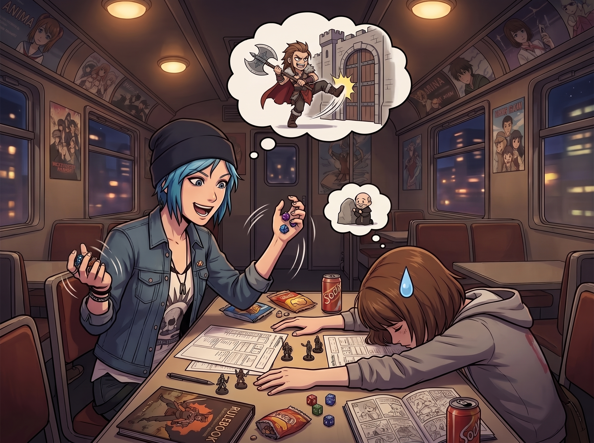
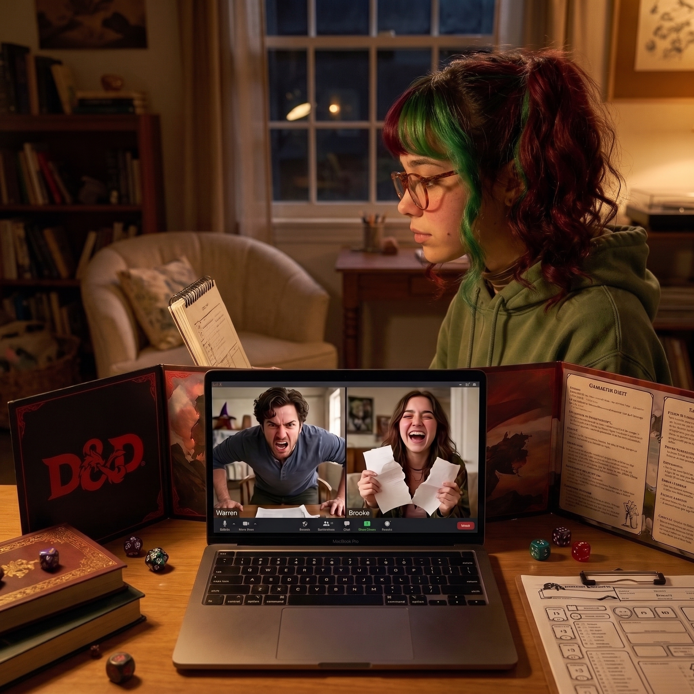

跑團之夜的毀滅


這是二號車廂極度罕見的一個宅文化之夜。
經過長達半年的死纏爛打，Warren 終於成功說服 Max，並破天荒地拉上了看在免費披薩份上的 Chloe，進行了一場遠端 D&D 跑團。螢幕那頭，Warren 興奮地戴著一頂廉價的巫師帽擔任地下城主，而他的學霸女友 Brooke 則在旁邊操控著一個精靈法師。
一、傳統跑團的僵局
「聽著，各位。」Warren 壓低聲音，試圖營造出史詩般的氛圍，「你們現在面對的是黑水鎮的領主，腐敗的男爵。他手下有五十名重裝半獸人衛兵，並且控制了鎮上所有的糧食供應。他要求你們交出精靈神器，否則就把村民全部吊死。你們要怎麼做？先攻檢定！」
「老娘是狂戰士！」Chloe 興奮地搖晃著骰子，「我直接一腳踹開男爵堡壘的大門，把手裡的雙刃斧扔向他的腦袋！我要讓他知道阿卡迪亞灣的規矩！」
「Chloe，妳面對的是五十個重裝守衛，妳會在一回合內被射成刺蝟的。」Brooke 在螢幕那頭無情地用概率學潑冷水，然後推了推眼鏡，「我的精靈法師準備在水源裡下毒，然後利用無人機……我是說，利用鷹眼術進行高空偵察。」
「我……」Max 趴在桌子上，像一條失去夢想的鹹魚，「我是一個牧師。我可以假裝自己是一塊石頭，等你們打完再出來補血嗎？我的社交電池連應付 NPC 都不夠了。」
就在遊戲陷入暴力強攻、科技暗殺與消極怠工的僵局時，Lily 端著一個放滿了 Kate 特製手工餅乾和熱茶的托盤，輕手輕腳地走進了鏡頭。
二、實習生的跨次元降維打擊
「打擾了，學長學姐們，請用茶。」Lily 乖巧地把托盤放下，好奇地看了一眼螢幕上的地圖，「請問……你們在玩什麼模擬經營遊戲嗎？」
「這是 D&D，Lily！一個充滿魔法與劍的奇幻世界！」Warren 激動地解釋，然後隨口抱怨了一句，「我們正卡在一個擁有絕對兵力的腐敗男爵身上，不知道該怎麼優雅地解決他。」
Lily 眨了眨大眼睛，溫柔地歪了歪頭。
「男爵？那就是擁有地方行政權力的公職人員囉？」Lily 推了推圓框眼鏡，眼神中閃過一絲危險的光芒，「既然他擁有封地，那他必定要向國王繳納歲貢。Warren 學長，請問這位男爵的財務報表和稅收金庫在哪裡？」
「呃……在他的地下室？有魔法陷阱保護。」Warren 愣住了。
「不需要去地下室。」Lily 拿起一塊餅乾，語氣像是在探討今天的菜單一樣輕鬆，「你們只需要在鎮上的酒館裡，散佈幾份匿名傳單，偽造一份男爵與敵國私通、意圖隱瞞金礦產量的告密信。然後，花兩個金幣僱傭幾個吟遊詩人，把這首歌唱到王都的監察官耳朵裡。國王的稅務審計官比任何半獸人都要可怕。一週之內，王家騎士團就會來查封他的堡壘。在此期間，男爵的資產會被凍結，他的衛兵會因為發不出薪水而譁變。我們甚至不需要拔劍，就能合法合規地讓他在絕望中走上斷頭台。這叫利用上級行政體系進行降維打擊。」
螢幕那頭，Warren 的嘴巴張得可以塞進一顆雞蛋。他手裡的二十面骰子「啪嗒」一聲掉在了鍵盤上。
三、學霸與宅男的雙重淪陷
「等等……」Brooke 的眼睛突然亮了起來，她猛地湊近鏡頭，彷彿看到了某種超越了科技與魔法的終極真理，「這種不需要物理接觸就能摧毀敵人的戰術邏輯……妳是怎麼想出來的？」
Chloe 在旁邊乾笑了一聲：「別問了 Brooke，這丫頭上個月剛用這招，逼得西雅圖交通局主動撤銷了我的違規罰單。」
「什麼？！」Brooke 的瞳孔引發了十級地震，「妳駭進了交通局的系統？！」
「沒有駭客行為，Brooke 學姐，那不合法。」Lily 露出一個純潔無瑕的天使微笑，「我只是寫了一個 Python 爬蟲腳本，交叉比對了交通局的設備採購清單，然後用 14000 頁的資訊自由法案申請表，癱瘓了他們的行政處理能力。我只是在幫助他們完善流程。」
「Python 爬蟲？利用開源情報進行合法勒索？！」Brooke 激動得直接把 D&D 的角色卡撕了，「Lily！妳這套系統的代碼開源了嗎？妳是怎麼繞過西雅圖市政廳的防火牆抓取採購清單的？教教我！我可以用我改裝的軍用級無人機圖紙跟妳換！」
Warren 也徹底瘋了，他一把扯下巫師帽：「去他的腐敗男爵！去他的魔法！Lily，如果我現在面臨一個一直拒絕給我實驗室批經費的頑固系主任，我該怎麼用妳的行政黑魔法讓他主動把經費雙手奉上，而且還要笑著對我說謝謝？！」
四、跑團之夜的徹底毀滅
接下來的兩個小時，D&D 跑團被徹底遺忘了。
這場視訊會議變成了一場名為當代社會工程學與體制內黑魔法的高峰論壇。
Lily 坐在鏡頭正中央，雙手交握，用最溫柔、最禮貌的語氣，向兩位震驚的理科高材生傳授著極其邪惡的社會學知識：「是的，Brooke 學姐，這就是降維打擊式抄送的精髓……沒錯，Warren 學長，您不需要跟他吵架，您只需要在他申請終身教授的審核期，以關心學術嚴謹性的名義，向學術委員會要求調閱他過去五年的實驗廢液處理記錄……」
而在鏡頭的邊緣，Chloe 和 Max 已經徹底邊緣化了。
Chloe 嚼著餅乾，一臉麻木地看著螢幕裡瘋狂做筆記的 Brooke 和 Warren：「Max，妳掐我一下。我是不是在做夢？Warren 那個連跟女生說話都會結巴的書呆子，現在正在跟我們的實習生學習如何合法地逼瘋系主任？」
Max 蜷縮在沙發上，雙眼失去了高光，已經進入了深度的禪定狀態。
「認命吧，Chloe。」Max 幽幽地嘆了一口氣，「從財團總裁，到退伍軍人，現在連代表著最高智商的理科宅男都淪陷了。Lily 已經完成了對阿卡迪亞灣所有陣營的統一。」
這時，Kate 恰好端著新出爐的蛋糕走進來，看著其樂融融的視訊畫面，溫柔地笑了：「哎呀，大家聊得真開心呢。Lily 真是個好孩子，走到哪裡都能交到朋友呢。」
「是啊，Kate。」Max 絕望地舉起茶杯，對著鏡頭裡那三個正在密謀如何合法顛覆大學行政系統的傢伙遙遙敬了一杯，「她不僅交到了朋友，她還快要統治世界了。」